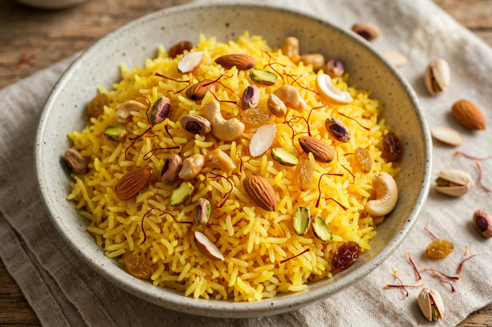
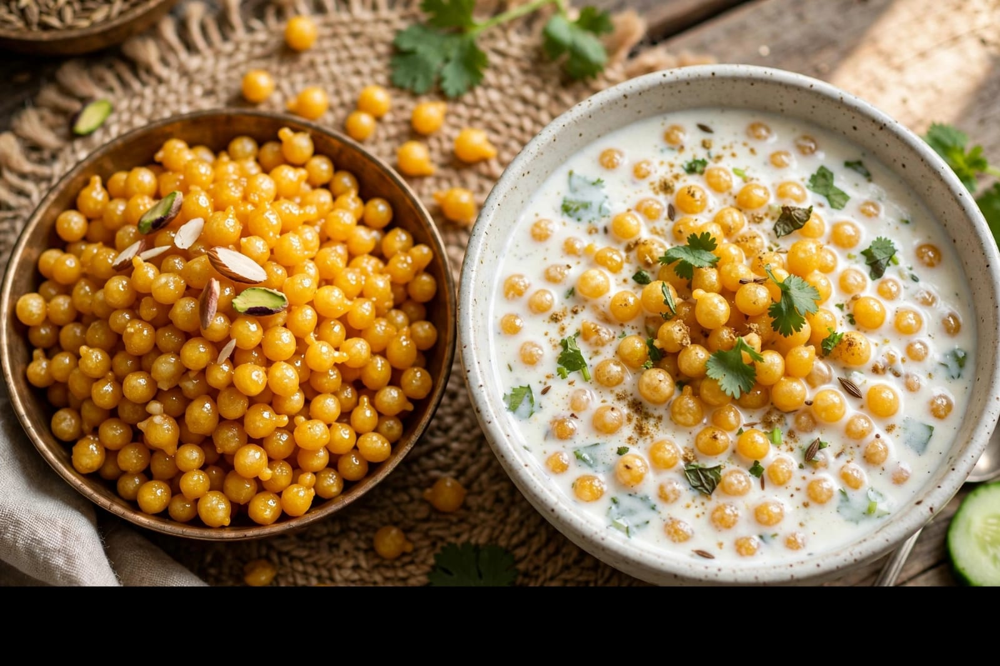

About Vasant Panchami
Vasant Panchami, also known as Basant Panchami or Sri Panchami, is a traditional Indian festival associated with the arrival of spring. It is celebrated in different parts of India with various regional customs.
The festival is especially associated with Goddess Saraswati, who is traditionally regarded as the goddess of knowledge, learning, music and arts. Schools and educational institutions in many regions organise Saraswati Puja on this occasion.
Yellow is an important colour during the festival. People may wear yellow clothes and prepare yellow-coloured food. In some places, children are introduced to learning through traditional ceremonies.
Vasant Panchami represents knowledge, creativity, learning and the beginning of spring. The festival is celebrated with prayers, cultural activities and family gatherings.
Special Foods of Vasant Panchami

Kesari Rice
A sweet rice preparation with saffron and sugar.

Boondi
Small sweet balls made from gram flour and sugar syrup.

Laddu
A popular sweet prepared during celebrations.